Tsunami quantitative analysis supplementary materials
This package contains the analysis-ready quantitative data and the executable analysis notebook for the TSUNAMI VR locomotion study. The study compared Baseline teleportation, Minimap-assisted teleportation, and Tsunami in a within-participant design with 42 participants across two anonymized study sites.
Contents
Tsunami_quantitative_analysis.ipynb— complete quantitative analysis with stored outputs.TSUNAMI_quantitative_figures.ipynb— one-off descriptive-figure export notebook.figures/— SVG figures generated by the figure-export notebook and used by the web supplement.input/— 14 anonymized, analysis-ready CSV files.study_questionnaire.md— administered questions and response formats.requirements.txt— Python dependencies used to reproduce the notebook.
Reproducibility
Reproduction begins with the CSV files in input/. Raw data are not distributed in this package due to the anonymization policy. The notebook expects to be run with its working directory set to this folder and reads data from ./input. Run all cells in order from a fresh kernel. A machine-readable snapshot of tables registered in the notebook's RESULTS collection.
Example environment setup:
python -m venv .venv
source .venv/bin/activate
python -m pip install -r requirements.txt
jupyter notebook TSUNAMI_quantitative_analysis.ipynbData conventions
- Public study-site labels are
SITE1andSITE2; the correspondence to internal site names is intentionally not distributed. - Participant identifiers are site-scoped and must be interpreted together with
Location, or throughParticipantUIDwhere supplied. - Coordinate and distance variables are expressed in metres unless stated otherwise.
- Durations are expressed in seconds and angular variables in degrees.
- Missing values are represented by empty CSV fields and are not imputed.
- Event timestamps retain time of day and milliseconds but omit calendar dates.
Data dictionary
Shared identifiers and units
Location contains the public site aliases SITE1 and SITE2. ParticipantID or Participant ID is the site-local participant number; ParticipantUID combines site and participant. Method uses baseline, map, and tsunami. Routes are identified as A, B, and C. Positions and distances are in metres, durations in seconds, and rotations or directional errors in degrees. Empty fields denote unavailable values; the analysis does not impute them.
Navigation and event datasets
city_race_aggregated.csv
Unit: one participant × method × route observation (378 rows). It contains total and banner-adjusted route times, banner counts and delays, teleport counts by method, traversed distance, and route-level summaries of aiming, orientation, head movement, directional error, and controller-directed attention. NetPathTime excludes banner delay; TotalPathTime includes it.
city_race_orientation_events.csv
Unit: one checkpoint-arrival event (2,231 rows). Source-row and time-of-day fields identify the teleport, arrival (appear), banner confirmation, and next aim. It contains headset vectors and positions at the relevant phases, landing-to-confirmation latency (BannerDelayTime), next-aim latency (ReorientationLatency), 3D/XZ head rotations, yaw and pitch components, controller-viewing angles, target geometry, and directional-error measures.
city_race_precision_200_to_500m.csv
Unit: one eligible direct long-range City Race landing (870 rows). It contains source-event references, start/target/landing positions, target and actual displacement, 2D/3D landing errors, and distance bands. DistanceBandBalanced uses the mutually exclusive 200–350 m and 351–500 m bands used by the notebook.
city_race_checkpoint_approach_episodes.csv
Unit: one complete checkpoint-approach episode (1,492 rows). It links first long-range movement through final checkpoint arrival and banner confirmation. It records first and final landing error, direct-hit status, number and distance of corrections, episode and banner timing, action sequences, distance bands, and episode status. A short correction is below 100 m.
Controlled Precision Task
precision.csv
Unit: one Precision Task trial (1,134 rows; three trials for each method × 50/100/200 m condition per participant). HoldTime is aim-to-teleport time; CompletionTime is trial completion time; AimingError is target-relative 2D Euclidean landing error. RecommendedExclude, RepeatedFailureGroup, and RepeatedFailureTrialExclude contain the adjudicated failed-manipulation decisions used by the primary cleaned analysis; DecisionReason records the rule outcome.
precision_exclusion_decisions.csv
Unit: one candidate Precision Task outlier (64 rows). This audit table records the group distribution, peer repetitions, raw-log verification, selected-point agreement, error relative to nominal distance, aim-to-teleport timing, repeated-failure logic, and final exclusion decision. The notebook does not load this file because the operative flags are embedded in precision.csv.
Questionnaire datasets
questionnaire_baseline.csv, questionnaire_minimap.csv, questionnaire_tsunami.csv
Unit: one participant after the named method (42 rows each). Eight statements are rated from 1 (strongly disagree) to 6 (strongly agree). They measure position and direction awareness, reorientation effort, environmental continuity, two forms of distance awareness, ease of learning, and intuitive use. The optional free-text response is documented in study_questionnaire.md but omitted from these quantitative release files.
questionnaire_cybersickness.csv
Unit: one participant (42 rows). CSQ-0 is the pre-experiment measurement and CSQ-1 through CSQ-3 follow the three method blocks in counterbalanced order. Each administration provides nausea, vestibular, oculomotor, and total CSQ-VR scores. The administered symptom scale contains seven ordered levels from Absent to Extreme.
questionnaire_raw-tlx.csv
Unit: one participant (42 rows). Baseline TLX, Minimap TLX, and Tsunami TLX are RAW-TLX composite scores transformed from the collected 0–20 responses to a 0–100 scale; higher scores indicate greater workload.
questionnaire_sbsod.csv
Unit: one participant (42 rows). SBSOD Mean Score is the scored Santa Barbara Sense of Direction composite; higher values indicate better self-reported sense of direction. Interpretation is its descriptive category.
questionnaire_demography.csv
Unit: one participant (42 rows). It contains age category, gender, prior VR and teleport-locomotion experience, non-VR gaming frequency, vision, motion-sickness susceptibility (1 = very low, 5 = very high), and dominant hand.
questionnaire_preferences.csv
Unit: one participant (42 rows). Each method is ranked 1st–3rd for overall long-range-navigation preference, comfort, perceived intuitiveness, and fun.
Detailed questionnaire wording
Exact questionnaire items and response options are given in study_questionnaire.md. Statistical transformations, participant-level completeness rules, models, contrasts, multiplicity corrections, sensitivity analyses, and result classifications are defined in the executable notebook.
Quantitative results and interpretation
This section provides a concise interpretation of all confirmatory, supplementary, and exploratory analyses contained in the notebook. It complements the more selective reporting in the manuscript. Unless stated otherwise, inferential conclusions use the tests and multiplicity corrections specified in the notebook. Statistical significance describes evidence against the tested null hypothesis; practical significance is assessed from effect sizes, confidence intervals, and the magnitude of the observed differences. A non-significant result is not interpreted as evidence of equivalence.
Sample context
The final quantitative sample comprised 42 participants: 24 from Site A and 18 from Site B. Most were 25--34 years old (26/42), 29 identified as men and 13 as women, and 41 were right-handed. Prior VR experience varied substantially: four participants had never used VR, 16 had used it 1--5 times, and only four reported at least weekly use. Eighteen participants had no prior experience with teleport locomotion. Self-reported motion-sickness susceptibility was generally low (35/42 selected very low or low). The mean SBSOD composite was 4.83 on its 1--7 scale (SD 0.98, median 5.00, range 3.07--6.53), where higher scores indicate better self-reported sense of direction. SBSOD categories comprised 11 Very High, 14 Rather High, 11 Average, and six Rather Low participants. The sample therefore mainly represents users without extensive routine VR-locomotion experience and with, on average, moderately high self-reported sense of direction.
RQ1: Practical viability
H1.1: Route-completion time
Both long-range techniques reduced City Race completion time relative to Baseline. Mean net route time was 67.06 s for Baseline, 48.66 s for Tsunami, and 41.01 s for Minimap. Relative to Baseline, Tsunami reduced net time by 18.40 s (95% CI [-23.82, -12.98], $d_z=-1.06$, adjusted $p<.001$), while Minimap reduced it by 26.05 s (95% CI [-31.50, -20.59], $d_z=-1.49$, adjusted $p<.001$). These are large and practically meaningful reductions, so H1.1 was supported for both techniques.
Minimap was additionally 7.65 s faster than Tsunami in net time (95% CI [4.13, 11.16], $d_z=.68$, $p<.001$). However, this advantage disappeared for total time including checkpoint-banner interaction: mean total time was 60.70 s for Minimap and 61.95 s for Tsunami, a non-significant difference of 1.25 s (95% CI [-2.48, 4.99], $p=.603$). Minimap therefore enabled faster movement between checkpoints, but its longer banner delays largely offset that advantage in total task time.
The route-level log-time mixed models, which used all available route observations, confirmed strong effects of method for net and total time (both $p<.001$). Method-by-route interactions were also significant (both $p<.001$), indicating that the magnitude of the advantage depended on environmental layout. Both Tsunami and Minimap nevertheless outperformed Baseline on every route. Tsunami was clearly slower than Minimap on Route A; their differences on Routes B and C were smaller and did not survive Holm correction consistently. Thus, the aggregate H1.1 result is robust, while the relative performance of the two long-range techniques is partly layout-dependent.
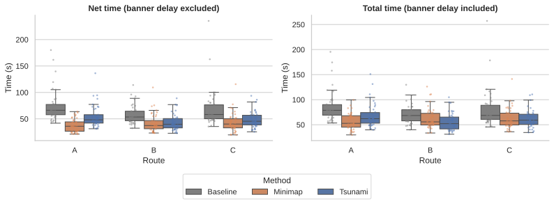
Interaction effort and path efficiency
Baseline required approximately 40.11 teleport events per navigation block, compared with 14.69 for Tsunami and 7.60 for Minimap. The negative-binomial model estimated incidence-rate ratios of .369 for Tsunami and .191 for Minimap relative to Baseline (both $p<.001$), corresponding to approximately 63% and 81% fewer teleport events. Both extensions therefore substantially reduced repetitive interaction effort, with Minimap requiring the fewest actions.
Mean path efficiency was .829 for Baseline, .859 for Minimap, and .798 for Tsunami. Relative to Baseline, Minimap was approximately 3.2% more efficient, whereas Tsunami was approximately 4.1% less efficient (both $p<.001$). Tsunami's time advantage over Baseline therefore did not arise from a shorter travelled path; it arose despite somewhat greater travelled distance, plausibly reflecting its different continuous long-range interaction dynamics.
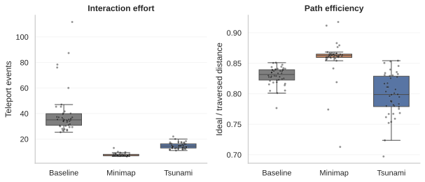
Controlled landing precision and interaction time
The primary Precision Task analysis retained 1,115 of 1,134 trials; 19 trials verified from the source logs as failed manipulations were excluded. Analyses retaining all trials served as sensitivity checks. Mixed models found method-by-distance interactions for landing error, hold time, and completion time (all $p<.001$), showing that technique differences changed across the 50, 100, and 200 m targets rather than following one constant ordering.
At 50 m, Baseline was most accurate and fastest, Tsunami was intermediate, and Minimap produced the largest error and longest interaction time. At 100 m, Tsunami and Baseline had similar landing error, while Minimap was less accurate; Tsunami also required less hold and completion time than Minimap. At 200 m, the three techniques converged in landing accuracy: Tsunami showed a modest advantage over Baseline in the cleaned analysis, but neither long-range technique differed reliably from the other. Both Tsunami and Minimap completed the 200 m trials faster than Baseline. These results suggest that conventional teleportation is preferable for short, controlled placements, whereas the long-range techniques become comparatively advantageous as distance increases. The broad interaction pattern was retained when excluded trials were restored, although the modest Tsunami--Baseline accuracy contrast at 200 m became borderline, so that particular contrast should not be overinterpreted.
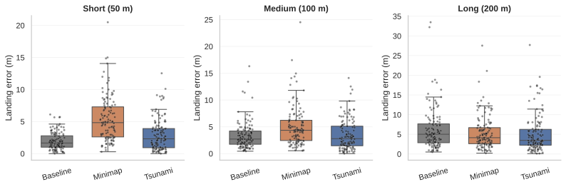
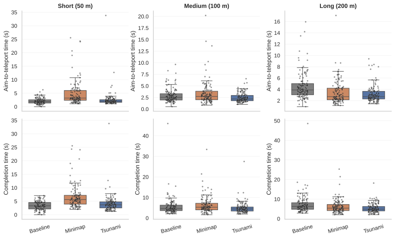
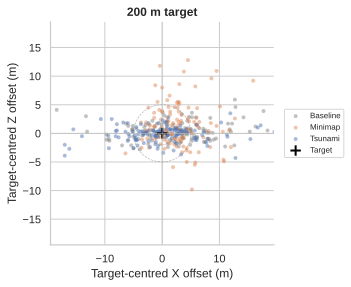
City Race landing accuracy
For successful direct long-range checkpoint landings in the Navigation Task, Minimap was more accurate than Tsunami. Adjusted Tsunami-minus-Minimap landing-error differences were 1.38 m in the 200--350 m band and 1.67 m in the 350--500 m band (both Holm-adjusted $p<.001$). Neither the categorical distance-band interaction ($p=.526$) nor the continuous method-by-distance interaction ($p=.250$) was significant. The Minimap accuracy advantage was therefore small in absolute terms and relatively stable across the observed long-distance range.
A complementary checkpoint-approach analysis included direct hits and sequences requiring corrective teleports. Direct hits were much more frequent with Minimap (692 of 741 episodes) than with Tsunami (159 of 751). Tsunami consequently required more corrections and greater correction distance. Its adjusted first-landing error exceeded Minimap by 8.43 m at 200--350 m and 18.36 m at 350--500 m (both $p<.001$), and the relative gap increased with distance ($p=.001$). These two analyses answer different questions: conditional direct-hit accuracy was reasonably close for both techniques, but the full approach analysis shows that Tsunami more often needed subsequent correction before checkpoint acquisition.
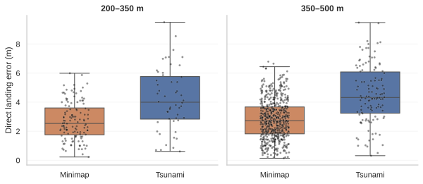
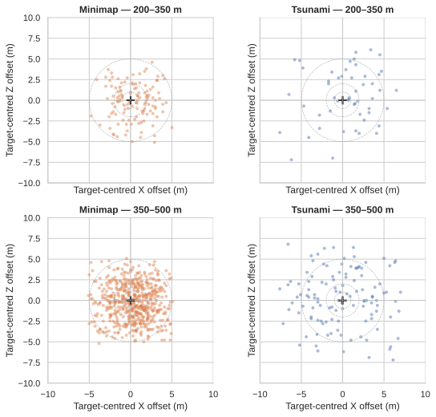
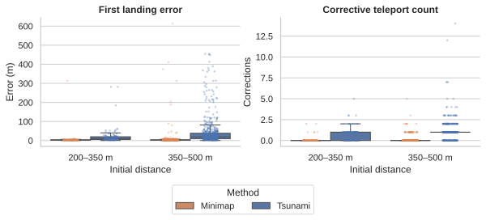
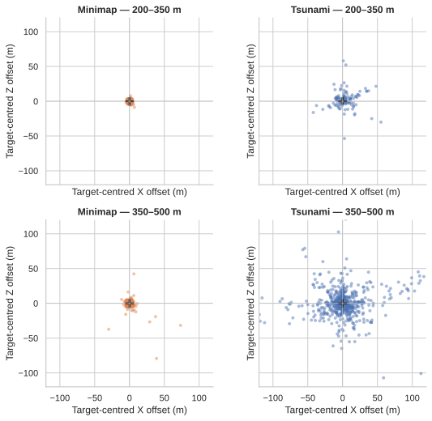
RQ2: Spatial awareness
H2.1: Post-teleport reorientation effort
Tsunami produced substantially less behavioral adjustment between checkpoint arrival and banner confirmation. Event-level mixed models estimated adjusted landing-to-confirmation latency of 2.05 s for Tsunami and 2.85 s for Minimap, a difference of -0.80 s (95% CI [-0.92, -0.68], $p<.001$). Adjusted three-dimensional head rotation was 4.55 degrees for Tsunami and 26.22 degrees for Minimap, a difference of -21.67 degrees (95% CI [-24.09, -19.25], $p<.001$). Participant-level sensitivity analyses yielded the same conclusion with large effects. H2.1 was therefore supported: Tsunami required less immediate post-arrival re-engagement with the surrounding scene.
Yaw and pitch decompositions both showed less movement with Tsunami, so the result was not driven solely by horizontal turning or by looking down toward the controller. During Minimap trials, the mean angle between gaze and the non-dominant controller increased from 44.17 degrees at landing to 70.38 degrees at banner confirmation ($p<.001$), consistent with a transition away from the map/controller and back toward the environment. This behavioral pattern did not correlate reliably with subjective spatial-awareness or continuity ratings after correction, so it should be interpreted as an interaction-attention transition rather than a direct individual-level measure of perceived awareness.
The phase after banner confirmation showed the complementary pattern. Event-level models found slightly longer banner-to-next-aim latency for Tsunami (1.30 vs. 1.11 s) and substantially greater head rotation (52.97 vs. 27.84 degrees; both $p<.001$). In participant-level sensitivity analyses, the latency difference was not significant, whereas the rotation difference remained robust. The interaction burden therefore appears to occur at different moments: Minimap users re-engaged with the scene before confirming the checkpoint, while Tsunami users performed more of the directional turn when initiating the next navigation action. This supporting analysis refines the timing of reorientation but does not overturn the preregistered landing-to-confirmation result.
Across successive events, latency and rotation decreased for both methods, indicating practice or procedural familiarization. Method-by-progress interactions were not significant, providing no evidence that Minimap users changed at a different longitudinal rate from Tsunami users within the observed session.
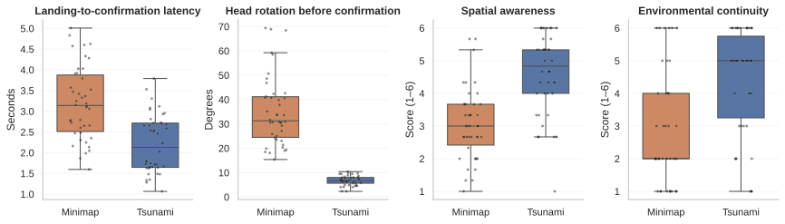
H2.2: Subjective spatial awareness
Participants reported higher spatial awareness with Tsunami (mean 4.62/6) than with Minimap (3.06/6). The paired difference was 1.56 points (95% CI [1.11, 2.02], $d_z=1.08$, rank-biserial correlation .85, $p<.001$), a large statistical and practical effect. H2.2 was supported.
The composite showed acceptable internal consistency for Tsunami (Cronbach's alpha .755), but weaker consistency for Baseline (.603) and especially Minimap (.499). The Minimap composite should therefore be read somewhat cautiously and alongside its constituent items. Environmental continuity analyzed separately showed the same direction: Tsunami scored 4.41 versus 2.90 for Minimap, a 1.50-point advantage (95% CI [.81, 2.19], $d_z=.68$, $p<.001$). Objective re-engagement behavior and subjective reports thus converge on a meaningful continuity advantage for Tsunami, although they measure related rather than identical constructs.
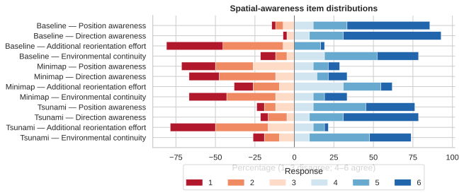
RQ3: Usability trade-offs
H3.1: Cybersickness
Mean CSQ-VR change scores were small for all methods: .33 after Baseline, .17 after Minimap, and .29 after Tsunami. The Tsunami-minus-Baseline difference was -.05 points (95% CI [-.95, .86], $d_z=-.02$, one-sided $p=.652$). H3.1 was not supported: the data provide no evidence that visible world deformation with Tsunami caused a greater short-term symptom increase than Baseline. Because the confidence interval includes effects in both directions and no equivalence margin was specified, this result should be described as absence of detected harm, not proof that the methods are equivalent.
Descriptively, the mean total CSQ-VR score rose only slightly across the experiment, from 7.00 before exposure to 7.64, 7.74, and 7.79 after successive blocks. Exploratory pairwise method comparisons were non-significant. The time course is consistent with limited overall symptom accumulation and no clear method-specific cybersickness signal in this sample.
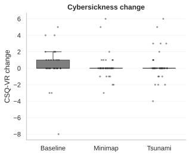
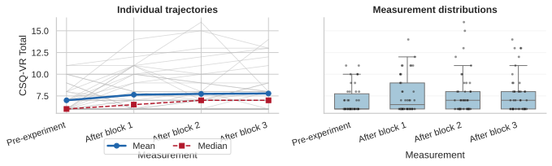
H3.2: Perceived workload
Mean RAW-TLX workload was 17.78 for Tsunami and 21.15 for Minimap. The paired Tsunami-minus-Minimap difference was -3.37 points on the 0--100 scale (95% CI [-6.78, .03], $d_z=-.31$, rank-biserial correlation -.34, one-sided $p=.029$). H3.2 was supported by the prespecified directional test. The effect is small-to-moderate and practically favorable to Tsunami, but its confidence interval reaches approximately zero; the magnitude should therefore be described as modest and less certain than the strong efficiency and spatial-awareness effects.
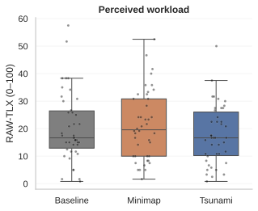
Usability, distance awareness, and preferences
Tsunami received a higher usability composite than Minimap (5.42 vs. 4.50/6), a .92-point difference (95% CI [.46, 1.37], $d_z=.63$, $p<.001$). It also received higher distance-awareness ratings (4.38 vs. 3.74), but this smaller .64-point difference was only nominally significant and did not remain significant under the broader sensitivity-family Holm correction. The usability result is therefore credible supporting evidence, whereas the distance-awareness result should remain exploratory.
Preferences provide practically important evidence beyond performance metrics. Tsunami was ranked first overall by 26 of 42 participants, compared with 11 for Minimap and five for Baseline, and it was ranked most fun by 29 participants. Overall ranking differences were significant ($p<.001$, Kendall's $W=.23$); Tsunami outranked both alternatives. For comfort, Tsunami reliably outranked Minimap but not Baseline. For intuitiveness, both Tsunami and Baseline outranked Minimap, with no reliable difference between them. For fun, Tsunami outranked both methods. The effects are consistent with strong engagement and acceptance of Tsunami, although the fun rating may partly reflect novelty and should not be treated as a pure usability measure.
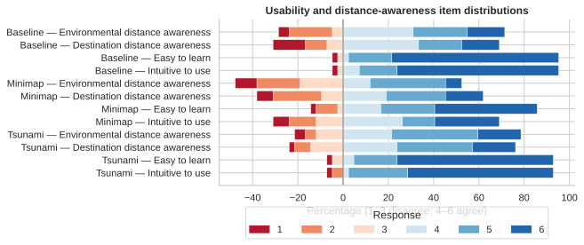
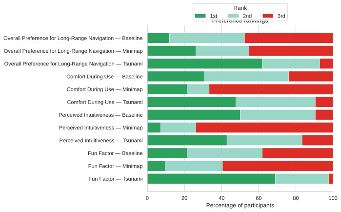
Statistical diagnostics and sensitivity analyses
The route-time mixed-model residual diagnostics were broadly compatible with the fitted log-time models. Precision timing outcomes retained some residual non-normality even after transformation, whereas cleaned landing-error residuals were approximately normal; the all-trials landing-error model was more strongly affected by extreme failed-manipulation trials. This supports the use of the adjudicated primary dataset together with the retained all-trials sensitivity analysis.
The paired-test sensitivity table compared paired t-tests and Wilcoxon signed-rank tests on identical participant-level pairs. Of 49 comparisons, 34 were significant under both tests and 12 were non-significant under both. Only two exploratory comparisons were significant after Holm correction with the t-test but not with Wilcoxon: the Tsunami--Minimap total-time contrast on Route B and the Baseline--Minimap comfort ranking. Both lay close to the .05 threshold and neither changes a confirmatory hypothesis conclusion. The H3.1 row was classified as direction-inconsistent because its negligible observed difference pointed opposite to the hypothesized direction, not because it demonstrated a meaningful reverse effect. Overall, the confirmatory conclusions are insensitive to choosing the conventional parametric or rank-based paired test; the isolated disagreements should be reported only as exploratory uncertainty.
Overall quantitative interpretation
The quantitative evidence establishes Tsunami as a viable long-range extension of teleport locomotion. It was substantially faster and required far fewer teleport actions than conventional Baseline teleportation, produced much stronger perceived spatial continuity than Minimap, did not show the hypothesized cybersickness increase, and was the preferred and most enjoyable technique for a majority of participants. Its principal trade-offs were lower net navigation speed and lower landing efficiency than Minimap, more frequent corrective checkpoint approaches, and only a modest workload advantage. Minimap maximized speed, path efficiency, and direct landing accuracy, but its interaction shifted attention toward the controller-mounted map and received lower spatial-awareness, usability, intuitiveness, and preference ratings. Together, the results characterize the techniques as different long-range design strategies rather than a universally superior and inferior pair: Minimap prioritizes operational efficiency, while Tsunami offers a more continuous and engaging first-person experience with competitive overall completion time.